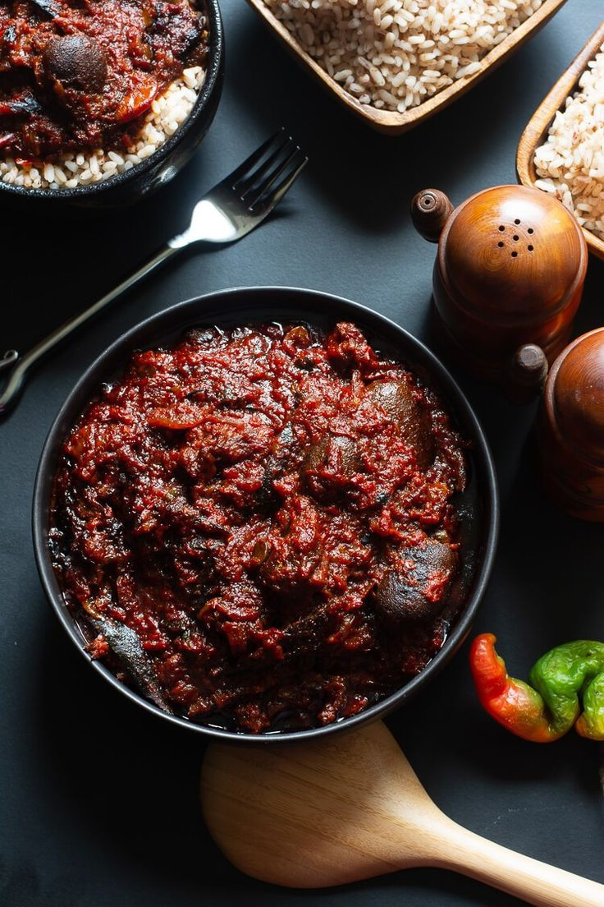

Stew Recipes
Tomatoes stew

Ingredients
- 1kg tomatoes
- Peppers
- Tatashe
- Shombo (a type of cayenne)
- Habanero peppers (atarodo)
- Assorted meat
- Beef cuts
- Beef intestines (roundabout)
- Cow tripe (shaki)
- Cow skin (ponmo, kanda)
- Vegetable oil
- 150g tomato paste
- 1 big mackerel fish
- 4 small seasoning cubes
- 2 onions
- 1 teaspoon thyme or to your taste
- 1 tablespoon curry powder
- Salt to taste
Preparation
- Pour the tomato puree in a big enough pot, boil on the stove till all the water dries up.
- Add the tomato paste, mix very well and set aside.
- Cook the meats with onions, 3 seasoning cubes and thyme.
- Boil the fish with onions and 1 seasoning cube to get the fish stock.
- Heat some vegetable oil in a pot. Add some onions and fry the fish till golden,Set aside.
- Add more onions to the oil and fry the tomato puree till perfect.
- Add curry powder, the meats, the fried fish and the fish and meat stock.
- Stir very well and add salt if necessary.
- Cover and leave to simmer and its done!
Banga stew
Ingredients
- 800g palm fruits (5 cups)
- 1kg (beef)
- 1 dry fish
- 2 smoked mackerel (titus fish)
- 1-2 bulbs of red onion
- 2 tablespoons ground crayfish
- 2 small seasoning cubes
- 1 small lump of ogiri okpei
- Habanero pepper (to your taste)
- Scent leaves
Preparation
- Boil the beef with the seasoning cubes and half of the chopped onions till done.
- For best results, I grill the meat in the oven.
- Slowly decant the palm fruit concentrate into the pot you will use to cook the Ofe Akwu making sure the unwanted sediments do not go into the pot.
- Add the beef stock, the grilled meat, dry fish, the remaining onions, ogiri okpei and pepper and crayfish.
- Cover and start cooking.
- When it boils, continue cooking till you see some red oil floating on top.
- Add the smoked mackerel and scent leaves.
- Cover and once it boils again, it’s done! Taste and add salt if necessary.
Ofada stew

Ingredients
- 40 pcs unripe habanero peppers (atarodo, ose oyibo, atarugu)
- 2 green tatashe peppers or green bell peppers
- 1 locust bean seasoning (Iru, ogiri okpei or dawadawa)
- 20cl red palm oil (at least)
- 1 big onion
- 1 handful crayfish
- Beef
- Shaki (cow tripe)
- Dry fish
- Stock fish
Preparation
- Cook all the meat and fish with the stock cube till well done.
- Pour the pepper blend into a separate pot and cook on high heat till all the water dries up.
- Pour the red palm oil into a clean dry pot and bleach till it turns clear.
- Leave the oil to cool down a bit then add the boiled pepper puree.
- Fry till all the water has dried from the pepper.
- Add the crayfish and locust bean seasoning, the orisirisi meat and fish and stir well.
- Add salt to taste, leave to simmer and it is ready to be served
Curry sauce

Ingredients
- 1 Whole Chicken
- 2 cooking spoons vegetable oil
- 5 Spring onions
- 8 fresh plum tomatoes
- 8 medium Carrots
- 1 small cabbage
- 3 medium Irish potatoes
- 1 red bell pepper (optional)
- 1 green bell pepper
- Salt (to taste)
- 3 big stock cubes
- 1 tablespoon thyme
Preparation
- Wash and cut the whole chicken into pieces.
- Place in a pot, add chopped spring onions, stock cubes and thyme.
- Add water to cover the contents of the pot and start cooking.
- When done, add salt to taste and top up the water to the same level as the contents if necessary.
- Once it boils, add the chopped tomatoes and the vegetable oil.
- Cover and cook for 15 minutes.
- Add the carrots and cook for 5 minutes.
- Now, add the potato puree, chopped bell peppers and cabbage.
- Stir, cover and allow to cook for 5 minutes on high heat.
- Add salt to taste and the sauce is ready to be served.